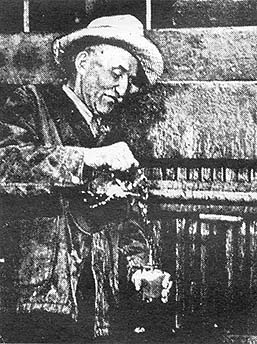

MINNESOTA EARTH JOURNAL/$3.00 to $5.00 a year, depending on
generosity of subscriber/317 Cedar Ave. / Minneapolis, Minnesota 55404.
Root Beer has been a popular soft drink since colonial days when it first appeared among such concoctions as birch beer, ginger beer, spruce beer and sarsaparilla beer. Contrary to present methods of production, the colonial root beer was a mild brew containing 1/2% to 1-3/4% alcohol. Non-acidic, it was recognized as a healthful drink flavored by roots and barks considered to have certain medicinal values.
There are many variations in the formulas and proportions used in making "old-fashioned" root beer. Here is a typical recipe:
1. A mixture is made by adding 1-1/2 gallons of molasses to 5 gallons of boiling water. This is allowed to stand for three hours.
2. Then 1/4 pound each of sarsaparilla root, bruised sassafras bark, and birch bark (wintergreen flavor) is added.
3. Next add 1/2 pint of fresh yeast, and enough water to make about 16 gallons total volume.
4. This is allowed to ferment for 12 hours before being drawn off for bottling (the same as in making beer), after which the secondary fermentation creates the carbonation.
5. Keep the temperature at 65 to 75 degrees F. during fermentation and after bottling until the carbonation process is complete.
The amount of alcohol in the beverage is dependent upon how long the batch ferments prior to bottling and the level to which the bottles are filled. By partially filling the bottles, the fermentation continues for a longer time and the alcoholic content is correspondingly increased. It is possible to obtain up to 10% alcohol with this process.
Since the roots and barks are not readily available, the non-purist can substitute root beer extract. A typical 3 oz. bottle will make 5 gallons of root beer and costs about 85 cents. If extract is used, an appropriate recipe will be found on the bottle.
There are, however, some drawbacks to using extract because some manufacturers do not adhere to a natural foods approach. They use aromatic chemicals such as methyl salicylate, and add burnt corn sugar to give it a dark color.
The above recipe is meant to be only a start. With a little experimenting you can develop exactly the unique taste you prefer. Typical ingredients often used for flavoring include:
Sassafras, sarsaparilla, wintergreen birch, deerberry, teaberry, checkerberry, boxberry, spiceberry, clove, cinnamon, vanilla, licorice and anise (resembles licorice).
Although the natural root or bark is preferred, oils of all these ingredients are produced commercially.
We have repeatedly emphasized the benefits derived from making your own beverages. Since soft drink manufacturers refuse to reveal their ingredients, there is no way other than home brewing to assure yourself of a preservative-free, wholesome beverage.
|
 |
|
|